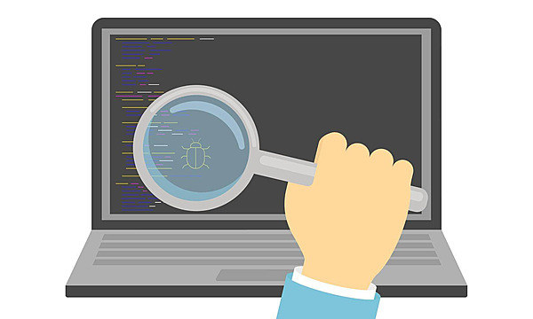
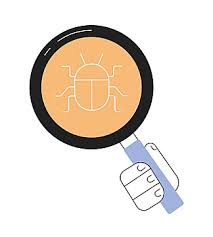

Introducción
Durante la transmisión de datos pueden presentarse errores debido al ruido y las interferencias. Por ello, se emplean métodos de detección y corrección de errores. Forouzan señala que estos métodos son esenciales para garantizar la confiabilidad de la comunicación.
Desarrollo
Los métodos más comunes incluyen técnicas basadas en redundancia, que permiten detectar errores en los datos transmitidos. Stallings explica que estos mecanismos no evitan los errores, pero permiten identificarlos y corregirlos en muchos casos.


Conclusión
En conclusión, los métodos de detección y corrección de errores son fundamentales para asegurar la integridad de la información transmitida.